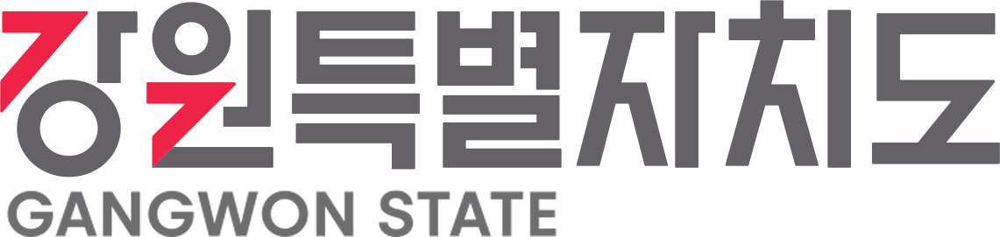
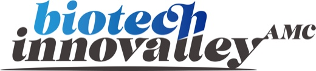
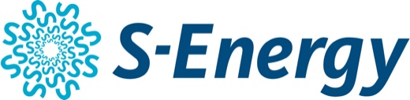

01BUSINESS · 사업소개
사업주체
BUSINESS STRUCTURE사업 구조
민·관이 함께 만드는, 가장 단단한 사업 구조
국토교통부가 선정하고, 강원도와 춘천시가 투자하며, 대한민국 대표 ICT 기업이 앵커로 참여하는 B-CITY는 시작부터 다릅니다.
명목회사(PFV) 중심의 투명한 사업 운영
B-CITY는 PFV(Project Financing Vehicle) 구조로 운영됩니다. 자본금·대출·분양수익이 한 곳에 집중되어 투명하고 효율적으로 관리되는 검증된 개발사업 구조입니다.
수분양자
분양대금
용지분양
토지소유주
토지 매매
토지 보상비
금융기관
PF대출약정
PF대출원리금 상환
바이오테크 이노밸리 PFV
명목회사 · 사업 시행 주체
출자금 납부진행 중
PFV 출자자
-
앵커기업 · AMC
- 더존비즈온37.3%
- 바이오테크이노밸리자산관리AMC0.2%
-
GI · 공공
- 강원특별자치도4.9%
- 춘천시4.9%
-
FI · 금융
- IBK투자증권5.0%
-
CI · 시공
- 부지조성공사 등TBD
-
SI · 전략
- 중소형 CDMO제약 · 바이오기업TBD
공사도급계약 및 책임준공CI(시공)는 출자자이면서 동시에 PFV 와 도급 관계를 맺습니다
이 구조가 만드는 다섯 가지 강점
- 01 민·관 합동정부 · 지자체 · 민간 자본 결합
- 02 공신력 확보국토교통부 선도사업 지정
- 03 추진 가속화지자체 직접 출자로 인허가 연계 강화
- 04 자산 분리PFV–AMC 분리 운영으로 투명성 확보
- 05 다층 파트너십앵커 · GI · FI · CI · SI 구조
관련 공식 문서
사업의 각 단계는 정부·지자체의 공식 문서로 확인됩니다.
- 국토교통부 기업혁신파크 선도사업 선정 공문
- 강원특별자치도 · 춘천시 출자지분 확정 공문
- 강원특별자치도 토지거래허가구역 지정 공고
- 춘천시 개발행위허가 제한지역 지정 고시
- 춘천 기업혁신파크 선도사업 개발구역 지정 공동제안 사항 공고
※ [보기]를 누르면 공문 원본을 확대해 보실 수 있습니다.
PARTNERS파트너사 소개
정부·지자체·기업·금융 등이 함께 만드는 B-CITY
신뢰할 수 있는 파트너십이 사업의 가장 큰 힘입니다
관계 기관GOVERNMENT PARTNERS 사업 인가 · 지원의 핵심 주체
-
국토교통부
춘천기업혁신파크 선도사업 선정 기관
통합개발계획 승인 및 사업 전반의 인허가 주관 -

강원특별자치도 B-CITY 사업 PFV 출자 4.9%
광역 행정 지원 및 첨단산업 정책 연계 -
 춘천시
B-CITY 사업 PFV 출자 4.9%
춘천시
B-CITY 사업 PFV 출자 4.9%
사업 인허가 협력 및 지역 인프라 지원
앵커 기업ANCHOR PARTNER 사업의 중심에서 비전을 함께 그리는 핵심 파트너
-
더존비즈온
앵커 파트너 / PFV 출자 37.3%
대한민국 대표 ICT·SaaS 기업으로서 B-CITY의 AI·디지털 산업 생태계를 선도
자산관리AMC PFV 자산의 전문 운용과 사업 실행을 관리하는 수탁자
-

바이오테크이노밸리자산관리㈜ 자산관리 수탁자(AMC)
PFV 자산의 전문 운용 및 사업 실행 관리
금융 파트너FINANCIAL INVESTORS 사업의 안정적 자금 조달을 지원하는 금융 파트너
-
IBK투자증권
금융투자자(FI) / PFV 출자
사업자금 조달 및 금융 자문
전략적 파트너STRATEGIC PARTNERS MOU 체결을 통해 산업 협력을 이어가는 파트너
-

에스에너지 MOU 체결 / 신재생에너지 협력 파트너
친환경 에너지 인프라 구축 협력 -
 프로티움사이언스
MOU 체결 / 바이오 산업 협력 파트너
프로티움사이언스
MOU 체결 / 바이오 산업 협력 파트너
첨단 바이오 클러스터 산업 생태계 협력
시공파트너(CI) · 전략적 투자자(SI)는 지속 확대 예정입니다.
※ 상기 계획(안)은 국토교통부 통합개발계획 접수(안) 기준으로 작성된 것으로, 추후 사업 주체 또는 관계 기관 사정, 인허가 과정 등에 따라 변경될 수 있습니다.